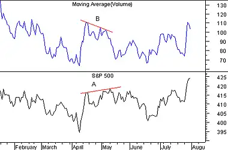

Advancing, declining, and unchanged volume are all market momentum indicators. They reflect movement on the New York Stock exchange in millions of shares.
Advancing volume is the total volume for all securities that advanced in price. Declining volume is the total volume for all securities that declined in price. And similarly, unchanged volume is the total volume for all securities that were unchanged in price.
Numerous indicators have been developed using up and down volume indicators. These indicators include the Cumulative Volume Index, Negative Volume Index, Positive Volume Index, and the Upside-Downside Ratio. Charts of the advancing or declining volume can be used to look for volume divergences (where advancing volume increases but the market falls) to see if selling pressure is waning, to view daily trends, etc.
Due to the erratic fluctuations in advancing and declining volume, I suggest you smooth the indicators with a 3- to 10-day moving average.
The following chart shows the S&P 500 and a 10-day moving average of advancing volume.
 A bearish divergence developed as prices tried to rally (trendline "A") while the advancing volume was declining (trendline "B"). If you only looked at the S&P 500 you might think the market was gaining strength. The Advancing Volume showed the true picture and prices were forced to correct.